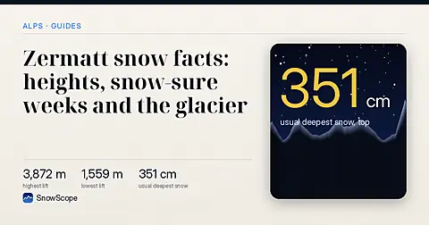

Where is the best snow in Switzerland? Zermatt, 47 cm on the upper slopes (18 November)
Snow check for Wednesday 18 November: 14 of 14 resorts in Switzerland are white up top, the deepest is Zermatt with 47 cm.
See the live snow forecast for Zermatt in the SnowScope appSnow depth, powder alerts and the 3D map, free.
Snow on the upper slopes
Half of the 14 resorts here have more than 28 cm up top, half have less.
The rest of the top five: Verbier (36 cm), Aletsch Arena (34 cm), Saas Fee (33 cm) and Crans-Montana (32 cm).
| Resort | Snow depth | New snow, 72 h | Coming, next days | Top |
|---|---|---|---|---|
| Zermatt | 47 cm | 61 cm | 77 cm | 3,872 m |
| Verbier | 36 cm | 64 cm | 81 cm | 3,304 m |
| Aletsch Arena | 34 cm | 37 cm | 41 cm | 2,869 m |
| Saas Fee | 33 cm | 43 cm | 49 cm | 3,556 m |
| Crans-Montana | 32 cm | 53 cm | 68 cm | 2,872 m |
| Engelberg-Titlis | 28 cm | 30 cm | 45 cm | 3,040 m |

Resort by resort
Zermatt reports 47 cm up top; the lifts reach 3,872 m. Fresh snow: 61 cm in three days, forecast 77 cm by 21 November.
Verbier: 36 cm on the upper slopes (top lift 3,304 m), 64 cm new in 72 hours, 81 cm more by 21 November.
Aletsch Arena: 34 cm on the upper slopes (top lift 2,869 m), 37 cm new in 72 hours, 41 cm more by 21 November.
Saas Fee: 33 cm on the upper slopes (top lift 3,556 m), 43 cm new in 72 hours, 49 cm more by 21 November.
What fell in the last three days
The last three days brought Verbier 64 cm, Zermatt 61 cm and Crans-Montana 53 cm.
The next three days
By 21 November the forecast gives Verbier 81 cm, Zermatt 77 cm and Crans-Montana 68 cm.
If you have two days
Best value for two days on skis: Zermatt, with 47 cm now and 77 cm more expected by 21 November.
For a short trip, combine a cheap day pass in the morning with the best snow on the highest lifts.
Off-piste and touring
With up to 64 cm of fresh snow, the first runs off the groomers will be soft. Read the local avalanche bulletin first and keep to slopes you know: fresh snow on a thin early base hides rocks.
A fresh layer like this makes the difference between scraped pistes and soft, grippy snow, especially on the steeper runs.
Tips for skiers
- Start early: the first hours give the best snow after a cold night.
- Winter tyres or chains for the last kilometres to the higher resorts.
- Off-piste only after reading the avalanche bulletin.
About these numbers
Resort snow depths are the deepest snow on the resort's upper slopes from the SnowScope snow model (about 1 km, run of 18 November); they are estimates for an area, not a measurement at one point. Station values are measurements on the date shown. Forecasts can change. Always read the official avalanche bulletin before going off-piste.
Cite this report
For research, teaching or the press: the numbers and charts are free to reuse under CC BY 4.0 with this citation.
SnowScope (2026), Where is the best snow in Switzerland? Zermatt, 47 cm on the upper slopes (18 November), https://snowscope.app/blog/en/2026/11/schneehoehen-schweiz-18-november-2026.html, accessed 2026-11-18
SnowScope (Atlas Labs). (2026, November 18). Where is the best snow in Switzerland? Zermatt, 47 cm on the upper slopes (18 November). SnowScope snow reports. https://snowscope.app/blog/en/2026/11/schneehoehen-schweiz-18-november-2026.html
BibTeX
@misc{snowscope2026schneehoehenschweiz18nov,
author = {{SnowScope (Atlas Labs)}},
title = {Where is the best snow in Switzerland? Zermatt, 47 cm on the upper slopes (18 November)},
year = {2026},
month = nov,
howpublished = {\url{https://snowscope.app/blog/en/2026/11/schneehoehen-schweiz-18-november-2026.html}},
note = {Published 2026-11-18 12:04 UTC; accessed 2026-11-18}
}· CC BY 4.0 · Methods, data and tools →
Zermatt: snow and temperature by height, this winter vs last (tools) →
Follow Zermatt
Free: a message when fresh snow is coming, and the forecast every morning.
More snow reports

Zermatt in numbers: where the snow lasts, the safest months and how to reach the car-free village, from 46 past winters of snow data.

Zermatt has 47 cm on upper slopes today, 690% above the November median. The 0°C level stays above 2200 m through Friday.

Glacier skiing from 68 EUR a day: we compared seven glaciers in France, Austria, Germany and Switzerland by price and by the snow they usually hold in December.